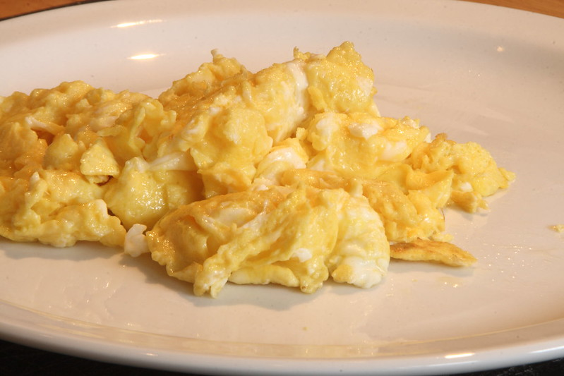
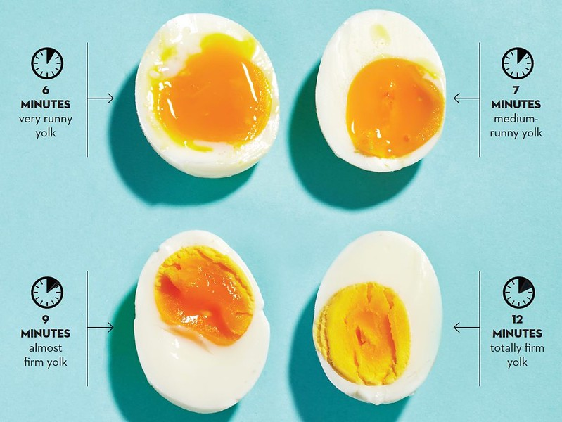

There are 3 main ways to cook eggs, they are scrambled, fried, boiled eggs.
Scrambled egg and omlets are 3 famous ways to make scambled egg. Scrabled egg is easy to cook so try it if you are not familiar with cooking eggs. Egg roll is a little bit hard to cook so try this if you had cooked egg before. Omlet is hard to make so try it after you get familiar to cooking eggs. I will teach you how to make scrambled egg, you heat the frying pan for a minute and put a egg, 5 seconds later, break the yolk and mix white and yolk until it become cooked.
Boiled eggs' taste depends on how long you boil it. Boil it for 4mins, 6mins, 8mins, or 10mins. Don't boil it on strong fire, eggs start ripens from 70°C. If you are having problem with taking off its shell, put some vinegar and salt when you boil it to take off shell easier
There are 3 main ways to cook fried egg, they are soft fried egg, hard fried egg, and sunny side up egg. In soft fried egg, egg white are cooked and the yolks are not cooked but for hard fried egg, white and yolk are both cooked. Sunny side up eggs don't have holes on them, they don't have brown things outsied and their bottom part. Sunny side up is hard to cook so I will teach you how to cook fried egg that most of people make usually, whixh is soft fried egg. Put some oil on the frying pan and heat the frying pan for a minute and put a egg on it, when the bottom part is fryed, flip it!
Home page